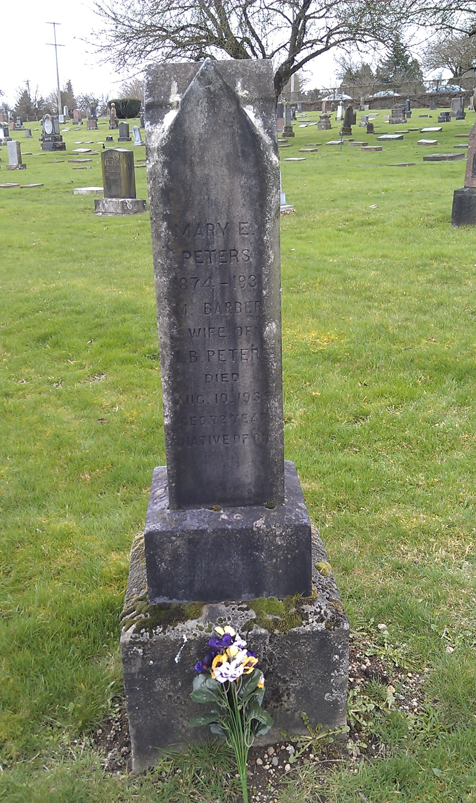

Mary Ellen Peters (née Hogan) 1873 - 1931
[ Home ] | [ Calendar ] | [ Surnames Index ] | [ Census Index ] | [ Family History ]Mary Hogan, the wife of Capt Albert Goodrich Peters (the third cousin twice-removed on the father's side of Nigel Horne), was born in New Westminster, British Columbia, Canada on Feb 28, 18731,2,3,4,5,6,7 and married Albert (a senior boat pilot with whom she had 2 children: Albert Ernest and Margaret Celena, along with 1 surviving child) in New Westminster on Sep 12, 18969.
During her life, she was living at her birthplace in 19011, in 19112 and on Jun 1, 19213 which is where she died on Jan 13, 19316,7,8. She was buried there at Fraser Cemetery after Jan 13, 19317.
Children
- Albert Ernest was born on Dec 26, 1902
Citations
- 1901 Census of Canada Ancestry.com Operations Inc (Marital Status: Married; Relation to Head of House: Wife)
- 1911 Census of Canada Online publication - Provo, UT, USA: Ancestry.com Operations Inc, 2006. .Original data - Library and Archives Canada. Census of Canada, 1911. Ottawa, Ontario, Canada: Library and Archives Canada, 2007. http://www.collectionscanada.gc.ca/databases/census-19 (Marital Status: Married; Relation to Head of House: Wife)
- 1921 Census of Canada Ancestry.com Operations Inc (Marital Status: Married; Relation to Head of House: Wife)
- British Columbia, Canada, Birth Index, 1854–1903 - Findmypast
- British Columbia, Canada, Birth Index, 1872-1903 Ancestry.com Operations Inc
- British Columbia, Canada, Death Index, 1872-1990 Ancestry.com Operations Inc
- Canada, Find A Grave Index, 1600s-Current Ancestry.com Operations, Inc.
- British Columbia, Canada, Death Index, 1872-1992 - Findmypast
- British Columbia, Canada, Marriage Index, 1872-1935 Ancestry.com Operations Inc
- Canada Census 1911 - Findmypast (was the wife of the head of the household)
Media
Mary Ellen Hogan - headstone

Canada Census 1911 - CAN/CENSUS/1911/00516626
British Columbia, Canada, Birth Index, 1854–1903 - US/MCV/101185/15117427193341073431
British Columbia, Canada, Death Index, 1872-1992 - US/MCV/126823/1743345420742709
Family Tree

Generated by ged2site. Last updated on Jun 11, 2024